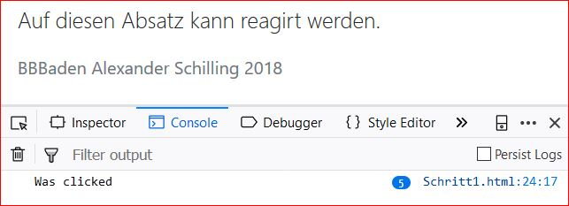

jQuery Mouse Aufgabe
Aufgabenstellung
1) Erstellen Sie mit jQuery die Möglichkeit, bei einem Klick auf den Satz «Auf diesen Absatz kann regiert werden» einen Text in der Konsole auszugeben.
In der Konsole ist zu sehen, wie oft man auf den «p»-Absatz geklickt hat: z.B. im oberen Screenshot – sechsmal. Diese Funktion ist beim Testen eines Skripts wichtig, da man auf diese Weise sehen kann, wie oft eine Ausgabe gemacht wurde.
2) Erstellen Sie ein zweites Skript, das in der Konsole meldet, wenn die Maus über dem «p»-Element ist.
Lösungen
Drücken Sie Ihr f12 Taste und gehen Sie in der Console. Jetzt gehen Sie mit der Maustaste über den Absatz:
Auf diesen Absatz kann reagiert werden
Jetzt klicken Sie auf den Absatz.